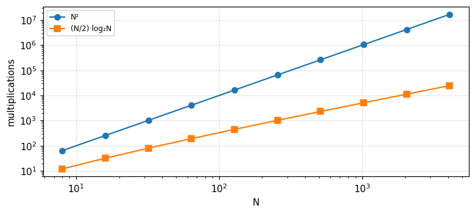
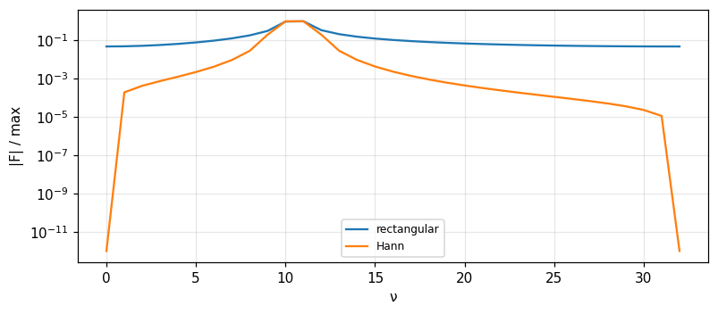

The DFT, the FFT and discrete-time random processes
The discrete Fourier transform and its theorems, the FFT algorithm, error and leakage, power spectra (Bracewell), then discrete-time processes, correlation matrices, AR, MA, ARMA and Markov chains (Barkat).
Lecture (slides) Hands-on with the Jupyter Notebook Self-check quiz
Lecture (slides)
The DFT, the FFT and discrete-time random processes
- Define the DFT and its inverse (with Bracewell's N^{-1} factor), read negative frequency indices, and use the shift, convolution, Parseval and packing theorems.
- Explain the FFT by matrix factorisation and even/odd splitting, count \tfrac N2\log_2N multiplications, and handle N not a power of 2.
- Assess DFT error (aliasing, truncation, leakage), use tapers, and understand why the raw power spectrum does not improve as N grows.
- Describe a discrete-time process by correlation, the Toeplitz matrix, the spectrum (discrete Wiener-Khinchin) and linear time-invariant systems.
- Build and analyse AR, MA and ARMA models (Yule-Walker), and discrete and continuous Markov chains (stationary distribution, birth-death).
Use the buttons, the dots or the ← → keys to move between slides.
The discrete Fourier transform and its theorems
- Definition, inverse, indices
- Symmetry, shift, convolution, Parseval
- Packing, stretching, MATLAB
Why a discrete theory is needed
A function given by a continuous variable appears in books and tables of transform pairs, but in practice data are often available only at discrete values, like voltage measured at regular time intervals. Whatever form the data take, when the transform is evaluated by a computer only discrete values are available. We often think of an underlying continuous function that we are approximating, but operationally it is irrelevant to talk about values other than the input and output (Bracewell, p. 258). In fact the finite situation lies within the continuous theory: a periodic function has a line spectrum; if the spectrum is also periodic the function is a row of impulses; both are described by two finite sets of coefficients. But the discrete notation is concise and standardised, so we start afresh.
Putting data into the form f(\tau)
We let the discrete variable \tau take N consecutive nonnegative integer values, after a change of scale and origin. For example a half period of a cosine v(t)=\cos2\pi t, -0.25<t<0.25, sampled every 100 ms at t=-150,-50,50,150 ms gives values 0.588, 0.951, 0.951, 0.588, with zero at the two ends (Tables 11.1 and 11.2). If the sampling interval is T and the first sample is at t_0 then f(\tau)=v(t_0+\tau T), \tau=0,\ldots,N-1. The choice of the end point is a conscious one: zeros may be appended, and the table does not say that the voltage stays zero after the half period (pp. 259 to 260).
The DFT definition
F(\nu)=N^{-1}\sum_{\tau=0}^{N-1}f(\tau)e^{-i2\pi\nu\tau/N}. Like the coefficient a_0 of a Fourier series, F(0) equals the mean of the values. The factor N^{-1} respects prior convention; in practical computing it is better to merge it with later normalising factors. \nu/N is analogous to frequency in cycles per sampling interval; if the sampling interval is T the frequency in hertz is \nu/NT. For example with N=8 samples 1 s apart, the component of frequency f is found at \nu=8f; and \nu=1 corresponds to \tfrac18 Hz (pp. 260 to 261). For f=\{1,2,3,4\}: F(0) = 2.5, F(1) = -0.5 + 0.5i, and F(2) = -0.5.
Proof of the inverse: the closed polygon
We need the lemma \sum_{\nu=0}^{N-1}e^{i2\pi\nu(\tau-\tau')/N}=N for \tau=\tau' and 0 otherwise. Picture the sum as a closed polygon in the complex plane, except when \tau=\tau', when it becomes a straight line of N unit vectors end to end (if \tau-\tau' could equal N,2N,\ldots the sum would equal N for \tau=\tau' mod N). It can also be seen as the orthogonality relation of sinusoids of different frequencies. Substitute F into the right-hand side and reorder the sums to obtain f(\tau') (p. 261). The inverse has no N^{-1} factor and a plus sign in the exponent. Numerical check: transforming and inverting returns f with deviation 7e-15.
Frequency indices and negative frequencies
The index \nu runs from 0 to N-1 like \tau. For a record of 1024 samples 1 s apart: the fundamental period is 1024 s, the highest frequency 0.5 Hz is the 512th harmonic. But \nu/N reaches 1023/1024, so it is not a strict analogue of frequency: \nu=724 gives \nu/N = 0.707 Hz, though frequencies above 0.5 Hz cannot be represented by samples at 1 s; in fact \nu=724 corresponds to a negative frequency -300/1024 = -0.293 Hz (Bracewell, p. 262). The customary way: allow all integers and regard f(\tau), F(\nu) as periodic with period N, f(\tau)=f(\tau+N), F(-\nu)=F(N-\nu), and take -\tfrac N2\le\nu<\tfrac N2.
Counting real numbers: why 1024 but only 512 frequencies
If f(\tau) is real there are 1024 real numbers. F(\nu) has 1024 complex values needing 2048 real numbers, except that F(0) and F(N/2) have no imaginary part and half the remaining values are complex conjugates of the other half (since f is real): 2+2\times511=1024 real numbers remain, enough to recover the data. Check with random data: F(N-\nu)=\overline{F(\nu)} holds to deviation 3e-14. If f were complex there would be 2048 real numbers and F needs 2048 (p. 262).
A stock of short pairs for checking
A small stock of short DFT pairs helps checking and studying new algorithms (pp. 265 to 266). N=2: \{1\,0\}\supset\tfrac12\{1\,1\}, \{1\,{-1}\}\supset\tfrac12\{0\,2\}. N=4: \{1\,0\,0\,0\}\supset\tfrac14\{1\,1\,1\,1\}; \{0\,1\,0\,0\}\supset\tfrac14\{1\,{-i}\,{-1}\,i\}; \{1\,1\,1\,1\}\supset\{1\,0\,0\,0\}; \{1\,1\,0\,0\}\supset\tfrac14\{2\,1{-}i\,0\,1{+}i\}. A unit impulse has a spectrum of flat modulus, while a constant is concentrated at \nu=0. Measured by two methods (definition and the root-of-unity matrix): \{1,1,0,0\} gives F(1) with real part 0.25 and imaginary part -0.25, and \{0,1,0,0\} gives F(1) with imaginary part -0.25.
The reciprocal property
The continuous transform applied twice gives f(-t). For the DFT, because the scale N makes the index \nu integral, it is not strictly reciprocal: applying it twice without changing the sign of i gives N^{-1}f(-\tau); that is, if f(\tau)\supset F(\nu) then F(\nu)\supset N^{-1}f(-\tau) (Bracewell, p. 266). Measured with 8 random numbers: the deviation between the DFT of the DFT and N^{-1}f(-\tau) is 2e-16. In practice, with the MATLAB function (\mathrm{fft} without N^{-1}), \mathrm{fft}(\mathrm{fft}(x))=N\,x(-\tau); for x=\{1,1,1,1,0,0,0,0\} we get 8\{1,0,0,0,0,1,1,1\}, factor 8 (p. 274).
Even, odd and the symmetry rules
A sequence is even if f(-\tau)=f(\tau), odd if f(-\tau)=-f(\tau), with f(-\tau)=f(N-\tau). Example 16-element even \{5432\,1000\,0000\,1234\} and odd \{0876\,5432\,0{-2}{-3}{-4}\,{-5}{-6}{-7}{-8}\}. The rules match the continuous transform: real \supset Hermitian; real and even \supset real and even; real and odd \supset imaginary and odd; imaginary and even \supset imaginary and even; imaginary and odd \supset real and odd (pp. 266 to 267). Measured: the largest imaginary part of the DFT of the even sequence is 4e-15, the largest real part of the DFT of the odd sequence is 2e-14. In practice the signal \{1,1,1,0,0,0,1,1\} symmetric about \tau=0 has a real DFT with the value at 0 equal to 5 (the sum, MATLAB).
Addition, conjugate, reversal, shift
f_1+f_2\supset F_1+F_2. Conjugate: f^*(\tau)\supset F^*(-\nu). Reversal: f(-\tau)\supset F(-\nu). Shift: f(\tau-T)\supset e^{-i2\pi T\nu/N}F(\nu), and the frequency shift e^{i2\pi\nu_0\tau/N}f(\tau)\supset F(\nu-\nu_0) (pp. 268 to 269). Shift example: \{0,1,0,0\} is \{1,0,0,0\} shifted one step, its DFT multiplied by (-i)^\nu: \tfrac14\{1,-i,-1,i\}. Measured: the deviation of the shift theorem with T=3, random N=16: 8e-16; the modulus |F| is unchanged by a shift so the amplitude spectrum is independent of the choice of origin, while the phase changes linearly.
Cyclic convolution and the convolution theorem
Convolving two sequences of m and n elements gives m+n-1 elements; for two N-element sequences the result is not containable in N elements. The cyclic convolution sum is h(\tau)=\sum f(\tau')g[\tau-\tau'+NH(\tau'-\tau)] (with g understood cyclically the NH term is dropped). The theorem: f_1(\tau)*f_2(\tau)\supset N F_1(\nu)F_2(\nu), and the product theorem f_1f_2\supset\sum_{\nu'}F_1(\nu')F_2(\nu-\nu') (pp. 264 to 269). Example: \{1100\}*\{1100\}=\{1210\} has DFT \tfrac14\{4,-2i,0,2i\}, matching N F_1^2, with F(1) having imaginary part -0.5. Exercise 2 of the chapter: \{1200\}*\{2300\}=\{2\,7\,6\,0\}; \{1111\}*\{0110\}=\{2222\}; \{1001\}*\{0100\}=\{1100\}.
Correlation, sum, first value, Parseval
Cross-correlation \sum f_1(\tau')f_2(\tau'+\tau)\supset NF_1(\nu)F_2(-\nu); autocorrelation \supset N|F(\nu)|^2. Sum of a sequence \sum f(\tau)=NF(0), and first value f(0)=\sum F(\nu): the mean of the sequence equals the first value of its DFT, but conversely the first value of the sequence equals the sum of the DFT. Example \{1050\}\supset\{1.5,-1,1.5,-1\}: the sum 6 = 4\times 1.5, f(0)=1 = 1.5-1+1.5-1. Parseval-Rayleigh: \sum|f|^2=N\sum|F|^2; for \{1100\}: 2 and 4\times0.5 = 2 (pp. 270 to 271).
Packing and stretching theorems
Packing \mathrm{Pack}_K\{f\} appends trailing zeros to get KN elements: G(\nu)=\tfrac1KF(\nu/K) at \nu=0,K,2K,\ldots; the intermediate values can be found by sinc interpolation (Problems 7 and 8). Example \mathrm{Pack}_2\{1,2,3,4\}=\{1,2,3,4,0,0,0,0\} gives G(0) = 1.25 (half of F(0)). Stretching \mathrm{Stretch}_K\{1234\}=\{10203040\}: G(\nu)=\tfrac1KF(\nu) repeated K times, not compressing the frequency scale; measured |G(1)| = 0.3536 (half of |F(1)|). This is like the continuous case where sparser sampling replicates the spectrum (pp. 271 to 272).
MATLAB conventions
The MATLAB \mathrm{fft} does not divide by N: X(k)=\sum_{n=1}^Nx(n)e^{-2\pi i(k-1)(n-1)/N}, so the first value is the sum not the mean, and indices start at 1 (k=1 is dc). For \{1,1,1,1,0,0,0,0\} the result is \{4,\ 1-2.4142i,\ 0,\ 1-0.4142i,\ 0,\ 1+0.4142i,\ 0,\ 1+2.4142i\} (pp. 272 to 274): imaginary parts 2.4142 and 0.4142, sum 4. Only \mathrm{ifft} divides by N. In practical computing the N^{-1} should be dropped in both directions and normalised once at the end. Bracewell warns to read the documentation since some packages implement a modification of the DFT rather than the DFT (pp. 278 to 279).
Self-check, part 1
- What is F(0) of \{1,2,3,4\} and why?
- Which frequency does the index \nu=724 with N=1024 correspond to?
- Why does appending zeros halve G(\nu) for K=2?
Hints: the mean 2.5; -300/1024 Hz; because the factor N^{-1} is now (KN)^{-1}.
The fast Fourier transform
- Matrix factorisation and even/odd splitting
- Counting multiplications
- Arbitrary N, appended zeros
History and motivation
In 1965 a method of computing discrete Fourier transforms suddenly became widely known (Cooley and Tukey, 1965) and revolutionised many fields where onerous computing was an impediment. Good historical sources: IEEE Trans. Audio and Electroacoustics, AU-2, June 1967, and Bergland (1969). The name Discrete Fourier Transform was introduced by Good (1951) (Bracewell, p. 275). There are various ways to understand the FFT: factorisation of the transform matrix, or splitting the sequence. If the direct DFT costs N^2 multiplications then for N=1024 that is 1048576 complex multiplications, while the FFT uses about 5120 (next slides).
Matrix factorisation
For N=8, F=Wf where W_{\nu\tau}=w^{\nu\tau} with w=e^{-i2\pi/N}, an Nth root of unity of modulus 1 and phase -1/N turn. The matrix W factors into three sparse matrices (each row has only two nonzero elements) times a permutation matrix (a rearrangement), so each factor needs 2N multiplications instead of N^2; the number of factors is M=\log_2N (not counting the permutation), total 2N\log_2N (Bracewell, pp. 275 to 276). Many multiplications are trivial, so careful counting is needed; but the gain in order is N/\log_2N. For N=1024 this estimate gives 2N\log_2N = 20480, about 51.2 times faster.
Splitting even and odd
Split the N-element sequence into two N/2-element sequences: the even-indexed and the odd-indexed elements. Example \{8,7,6,5,4,3,2,1\}=\{8,0,6,0,4,0,2,0\}+\{0,7,0,5,0,3,0,1\}. By the stretching theorem the DFT of the even part is \{ABCD\,ABCD\}, and by the shift theorem the DFT of the odd part is \{P\,WQ\,W^2R\,W^3S\,W^4P\ldots\} with W=e^{-i2\pi/8}; adding gives the long DFT (pp. 276 to 277). So F(\nu)=\tfrac12[E(\nu)+W^\nu O(\nu)] with E,O the DFTs of the two short sequences (with \nu mod 4). Measured for \{8,\ldots,1\}: F(0) = 4.5 (the mean), and the even/odd formula matches the direct DFT, deviation 8e-16.
Bit reversal and the flow diagram
Applying the splitting recursively to the end, the flow diagram (Figs. 11.6 to 11.8) has \log_2N columns of adders. The first step is a rearrangement of the sequence, corresponding to multiplication by the first matrix, loosely called bit reversal: \{8,7,6,5,4,3,2,1\}\to\{8,4,6,2,7,3,5,1\}, i.e. the index order 0,4,2,6,1,5,3,7 (binary indices read backwards). Then three stages of additions with multiplication by W^k follow. In Fig. 11.8 there are 48 multiplications, but 32 are by unity and 7 are by W^4=-1 (sign reversal); W^2, W^6 are also simple (pp. 277 to 278). Measured: the second element of the bit-reversed order is 4 and the third is 2.
Counting multiplications by program
Implement the recursive halving FFT with a counter for multiplications by the factor W^k. For N=8 the total is 12 multiplications (equal to \tfrac N2\log_2N), of which 7 are by 1, 3 by \pm i or -1, and only 2 are genuine multiplications by W^1 and W^3. For N=1024 the total is 5120, against N^2 = 1048576: ratio 204.8. Bracewell stresses that trivial multiplications must be counted carefully so different programs give different counts, and running time is the final criterion (pp. 278, 282).

When N is not a power of 2
With 365 values, 365=5\times73 so in theory an advantage can still be extracted, but base-3, 5, 7, 11, 13 programs exist (Winograd; Nussbaumer 1982), and no base-73 one. The simple way: extend the sequence to 512 elements with zeros. Then the values do not refer to harmonics of one cycle per year. If exactly 365 complex values are needed the MATLAB \mathrm{fft} still delivers them; measured: the FFT on N=365 matches the direct DFT definition with deviation 6e-12 (Bracewell, pp. 283 to 284). Real programs use mixed radix so are fast for any N with small factors.
Appending zeros: before, after or in between?
With 60 elements to be padded to 64: four zeros at the end, at the start, or 2+2 at both ends. From Fig. 11.4 and the shift theorem |F(\nu)| is unaffected, only the phase differs owing to the shift of origin; if phase matters use the correction factor of the shift theorem (p. 279). Measured: the largest modulus difference among the three ways is 5e-15, and the shift theorem holds exactly. But if 68 zeros are added to use an N=128 program the answer can be yes: the padded sequence has jumps at both ends.
Extending the period and the spectral islands
The discrete function is v(t)\mathrm{III}(t) but is not periodic; the periodic one is p(t)=[v(t)\mathrm{III}(t)]*N^{-1}\mathrm{III}(t/N), corresponding exactly to f(\tau). The transform is P(f)=[S(f)*\mathrm{III}(f)]\mathrm{III}(Nf): the DFT is the samples of the same expression S*\mathrm{III} at intervals 1/N. If the record is replicated with period 2N, the same expression is sampled twice as densely. Why the difference? Because S(f) normally oscillates when f(\tau) has large jumps at the start and end of the string; thanks to periodicity a large initial value is not a jump if the final value is close to it (pp. 279 to 280). Measured: \cos(2\pi\cdot5\tau/64) has only two lines at 64 points, but appending 64 zeros makes 0.095 of the energy leak outside the neighbourhood of the line.
Self-check, part 2
- How many multiplications does the radix-2 FFT need for N=8?
- What is the bit-reversed order of 8 elements?
- Why can appending trailing zeros make the spectrum rough?
Hints: \tfrac N2\log_2N=12; 0,4,2,6,1,5,3,7; because it creates a jump between data and zeros.
Is the DFT correct: error, tapers, power spectra
- Aliasing, truncation, leakage
- Convolution by FFT and the 2D DFT
- The power spectrum
Question: does the DFT approximate the FT correctly
The theory of the DFT is precise and self-consistent, but the DFT can only be an approximation since it provides only a finite set of discrete frequencies; and even these discrete values may be wrong. The discussion is based on the sampling theorem and aliasing. If the initial samples are not dense enough to represent high-frequency components present in the underlying function, both the DFT values and a smooth curve through them are falsified by aliasing. If the underlying function is known the error is calculable; if the measured samples are all we have, avoiding the error depends on prior knowledge or experiment, for example a run with twice the number of samples in the same time can confirm the presence or absence of higher frequencies (Bracewell, pp. 280 to 281).
Aliasing in the DFT
A cosine of 0.75 cycles per sample, above the Nyquist frequency 0.5, appears at frequency 1-0.75=0.25 in a 64-point DFT: the peak lies at \nu = 16 instead of \nu=48; the spectrum cannot distinguish the two frequencies. In general frequencies f and f+k (cycles per sample) give the same sample sequence, a consequence of the spectral replication at period 1 by \mathrm{III} (module 13). Prevention: low-pass filter before sampling, or sample more densely.
Truncation: smoothing and leakage
Truncating a function gives a wrong FT (the result is the convolution of the true FT with a sinc), not specific to the DFT. But the DFT error is different: the convolution is with samples of the sinc corresponding to the width of the rectangle factor, an entity like Q(f) in Fig. 11.1, so besides smoothing (loss of fine detail) there is leakage: the left and right islands of Q(f) leak into the central island. Leakage may be reduced by a tapered truncation factor in place of the rectangle, at the expense of increased smoothing error; leakage falsifies the higher frequencies (near \nu\approx N/2) (p. 281). Measured with 64 points and exactly 10 cycles: the energy fraction outside \pm2 bins around the line is 1e-16; with 10.5 cycles it is 0.0852; with a Hann taper it is 0.0005.

The cosine-bell taper: convolution with three coefficients
Problem 13: multiplying the sequence by a cosine bell w(\tau)=0.5-0.5\cos(2\pi\tau/N) (rising from zero at \tau=0 and falling to zero at the end) makes the DFT undergo discrete convolution with the N-element sequence \{\tfrac12,-\tfrac14,0,\ldots,0,-\tfrac14\}: replace F(\nu) by -\tfrac14F(\nu-1)+\tfrac12F(\nu)-\tfrac14F(\nu+1) (p. 289). Measured: central coefficient 0.5, neighbours -0.25 (sum w(0)=0), the deviation between the DFT of the tapered sequence and the three-coefficient formula is 2e-15. The book's question: does \{-\tfrac14,\tfrac12,-\tfrac14\} sharpen? The sum of coefficients being 0 means the smooth component of F is cancelled, but the effect on a spectral line is to spread it sideways to kill the far lobes (p. 289).
Problem 10: the DFT against the FT of e^{-t/4}H(t)
Take f(\tau)=e^{-\tau/4} for 1\le\tau\le31 and f(0)=0.5; compare the DFT with the continuous transform V(f)=1/(\tfrac14+i2\pi f) of e^{-t/4}H(t) (p. 290). At \nu=0: N F(0)=\sum f equals 4.0193 against V(0)=4, relative error 0.0048; at \nu=8 (f=0.25) the relative error is 0.2199. The sources: the initial value 0.5 is the trapezoidal rule (half the jump) that makes the Poisson sum of the spectrum agree; the remaining error is aliasing since V(f) does not cut off absolutely, plus truncation at \tau=31. Check with the closed geometric sum: \tfrac{1-z^{32}}{1-z}-\tfrac12 with z=e^{-1/4-i2\pi\nu/N} coincides with N F(\nu) to deviation 1e-15.
Convolution, correlation and autocorrelation by FFT
General convolution, including cross- and autocorrelation, is now best performed by taking two DFTs, multiplying, and inverting. But two N-element inputs give a 2N-1-element output so multiplying term by term and inverting gives only the correct length by half: the result closes around the circle and overlaps itself (Figs. 11.4, 11.10, 11.11). Example: the rectangle \{1111\}: the cyclic autocorrelation gives \{4,4,4,4\} (value 4), not yet a triangle. Pad with zeros to double length: \{4,3,2,1,0,1,2,3\}, the lag-1 value is 3, and the true length 4+4-1 = 7 elements (p. 282).
The two-dimensional DFT
F(\mu,\nu)=(MN)^{-1}\sum\sum f(\sigma,\tau)e^{-i2\pi(\mu\sigma/M+\nu\tau/N)}: separable, i.e. one-dimensional DFTs along rows and then along columns. Since the integers \sigma,\tau start at 0, a symmetric object in the (x,y) plane is carved in a strange way on the (\sigma,\tau) plane; a guard zone of zeros around the object is not a surround on the matrix either. If the origin does not coincide the transform of a symmetric object is complex but the modulus is right and the phase advances linearly by the shift theorem (Bracewell, pp. 284 to 285). Measured: the largest imaginary part of the 2D DFT of an object symmetric about the cyclic origin is 1e-16; when the object is shifted by (2,3) the largest imaginary part is 13.66 but the modulus is unchanged; and the separable DFT matches the direct double sum.
The power spectrum: phase loses meaning
When phase is unimportant or unknowable one deals with |F(\nu)|^2, called the power spectrum, even though it may not represent power. The power spectrum of a function of continuous time is measured in W/Hz, never plain W. For a random process the power spectrum is often defined as the transform of the autocovariance function (with the DC level subtracted); with real data we have only one finite data string (pp. 285 to 286). Example sea-surface height taken every 10 s: the values |F(\nu)|^2 show in what bands the wave power resides, but with limited precision and resolution because N is finite.
The paradox: increasing N does not improve precision
Intuition: quadrupling N should halve the irregular variation between values of |F(\nu)|^2. But in fact the precision is not improved at all: defining the power spectrum as the limit N\to\infty does not work for data of random origin. Measured with white Gaussian noise: the ratio of standard deviation to mean of |F|^2 is 1 for N=256 and 1 for N=4096. The correct explanation: in a band chosen in advance the power is indeed measured more precisely as N increases since more values are added: the relative deviation of the band power over [0.1,0.2] is 0.19 for N=256 and 0.05 for N=4096 (Bracewell, pp. 286 to 287).
Smoothing the spectrum: precision traded for resolution
The values |F(\nu)|^2 scatter around a general trend; averaging several adjacent values (convolution in the power-spectrum domain) reduces the scatter. Averaging M=16 adjacent values brings the ratio of standard deviation to mean from 1 down to 0.25 (\approx1/\sqrt{M}=0.25). But averaging too many loses frequency resolution: a narrow spectral feature gets an underestimated strength, a larger width and side lobes. The optimum depends on purpose: absolute strength measurement, separating close lines, or avoiding false detection; no unique advice, hence the variety of prescriptions in the literature. Blackman and Tukey (1958) named the tapering factor applied to the autocorrelation the lag window (pp. 287 to 288).
Using the FFT is an art
- Applications: X-ray diffraction, radio interferometry (only faster than what was done), and low-pass filtering a two-dimensional image: DFT, multiply by the transfer function, invert; faster than direct convolution of order N^2 for large N.
- A taper applied directly to the data is not the same as a lag window: the result is not a convolution of the raw spectrum with a sequence of weights, so it is not strictly the power in a band.
- Because circumstances vary, use of the FFT is an art; experimenting with one's own data to gain experience is a valuable use of commercial programs (Bracewell, p. 288).
Self-check, part 3
- Why does the raw power spectrum of white noise have relative deviation 1 for every N?
- How much zero padding does autocorrelation by FFT need?
- What does the Hann taper trade for what?
Hints: each value is a sum of two squared independent Gaussians, an exponential distribution; double the length; less leakage, more smoothing.
Discrete-time random processes
- Definitions and the correlation matrix
- Eigenvalues and the spectral theorem
- Spectrum and linear systems
Discrete processes and the time-series model
A discrete random process maps the sample space into a discrete-domain functional space: an ensemble of real or complex sequences (realisations) denoted X(n); Barkat keeps this notation to be consistent with X(t) of continuous processes and normalises time to the sampling period. For fixed n, X(n) is a random variable. The time series X(n),X(n-1),\ldots,X(n-M+1) consists of the present observation and M-1 past ones. The general data model is the linear difference equation X(n)=-\sum_{k=1}^pa(k)X(n-k)+\sum_{k=0}^qb(k)U(n-k) (4.1) with U a driving sequence. The spectrum is then a function of the model parameters, the parametric approach (Barkat, section 4.1, pp. 223 to 224).
Mean, autocorrelation, covariance
m_x(n)=E[X(n)], r_{xx}(n_1,n_2)=E[X(n_1)X^*(n_2)], c_{xx}(n_1,n_2)=r_{xx}-m_x(n_1)m_x^*(n_2) (4.105 to 4.107). Wide-sense stationary: constant mean and r_{xx}(n,n+k)=r_{xx}(k)=c_{xx}(k)+m_x^2 depending only on the lag k. Two processes are jointly stationary if each is stationary and the cross-correlation is r_{xy}(k)=c_{xy}(k)+m_xm_y^*. Properties: r_{xx}(0)\ge|r_{xx}(k)| with r_{xx}(0) real positive, r_{xx}(-k)=r_{xx}^*(k), r_{xx}(0)r_{yy}(0)\ge|r_{xy}(k)|^2, r_{xy}(-k)=r_{yx}^*(k) (4.112 to 4.115) (pp. 245 to 246). Measured with r(k)=0.8^{|k|}: r(0)\ge r(k) and the values r(1) = 0.8, r(3) = 0.512.
The Toeplitz correlation matrix
For the column vector X(n)=[X(n),X(n-1),\ldots,X(n-M+1)]^T of a stationary process, the correlation matrix R=E[X(n)X^H(n)] is Hermitian Toeplitz with r(0) on the diagonal and r(\pm k) on the off-diagonals (4.116 to 4.118), and positive semidefinite: E|\sum a^*(k)X(k)|^2=\sum\sum a^*(l)a(k)r(l-k)\ge0 (4.119). Example M=4 with r(k)=0.8^{|k|}: R has r(0)=1, r(1)=0.8, r(2)=0.64, r(3)=0.512; its eigenvalues are 3.1032, 0.5593, 0.2088, 0.1287, all positive, and their sum equals the trace 4 (pp. 246 to 247). Checked two ways: eigendecomposition and the roots of the characteristic polynomial.
Six eigen properties, and an error in the book
Barkat lists (pp. 247 to 249): (1) distinct eigenvalues are real; (2) eigenvectors of distinct eigenvalues are linearly independent; (3) they are orthogonal v_i^Hv_j=0; (4) the eigenvalues of R^k are \lambda_i^k, so of R^{-1} they are 1/\lambda_i; (5) R=V\Lambda V^H=\sum\lambda_iv_iv_i^H (the spectral theorem) and R^{-1}=\sum\lambda_i^{-1}v_iv_i^H; (6) \mathrm{tr}(R)=\sum\lambda_i. Error: property (1) in the book calls the eigenvalues \"real and negative\", contradicting the positive semidefiniteness stated just above (eigenvalues \ge0); the correct statement is real and nonnegative. In our example the eigenvalues are all positive. Measured: V^HV=I to 4e-16; R=V\Lambda V^H to 1e-15; the eigenvalues of R^{-1} are reciprocals, the largest 7.7675.
The discrete power spectrum and Wiener-Khinchin
S_{xx}(\omega)=\sum_{k=-\infty}^\infty r_{xx}(k)e^{-j\omega k}, |\omega|<\pi (4.131) is periodic with period 2\pi (4.132), since e^{-j\omega2\pi kl}=1. By analogy with the Fourier series with -\omega like t: r_{xx}(k)=\tfrac1{2\pi}\int_{-\pi}^{\pi}S_{xx}(\omega)e^{j\omega k}d\omega (Barkat writes a minus sign in this integral). The two formulas are the discrete Wiener-Khinchin relations, and the mean power is r_{xx}(0)=E[|X(n)|^2]=\tfrac1{2\pi}\int S_{xx}d\omega (4.134 to 4.135). S_{xx} is real since r_{xx}(-k)=r_{xx}^*(k). For r(k)=\rho^{|k|}, S(\omega)=\dfrac{1-\rho^2}{1-2\rho\cos\omega+\rho^2}; with \rho=0.8: S(0) = 9, S(\pi) = 0.1111; the integral gives r(0)=1 and r(3) = 0.512 (pp. 249 to 250).
Linear time-invariant systems
With stationary input X(n) and impulse response h(n): r_{xy}(k)=h(k)*r_{xx}(k), r_{yx}(k)=h^*(-k)*r_{xx}(k), r_{yy}(k)=h(k)*h^*(-k)*r_{xx}(k) (4.138 to 4.140). Taking Z-transforms: S_{xy}(Z)=H(Z)S_{xx}(Z), S_{yx}(Z)=H^*(1/Z^*)S_{xx}(Z), S_{yy}(Z)=H(Z)H^*(1/Z^*)S_{xx}(Z), with H(Z)=\sum h(n)Z^{-n}. On the unit circle, for real h, S_{yy}(\omega)=|H(e^{j\omega})|^2S_{xx}(\omega) (4.147) (pp. 250 to 252). This is the discrete counterpart of the Wiener-Khinchin theorem through a linear system (module 12) and of the double convolution in correlation.
Example 4.3: white noise through a filter
White noise: E[X(n_1)X^*(n_2)]=\sigma_n^2\delta(n_2-n_1), r_{xx}(k)=\sigma_n^2\delta(k), flat spectrum S_{xx}(\omega)=\sigma_n^2; output S_{yy}(\omega)=\sigma_n^2|H(e^{j\omega})|^2 (4.148 to 4.156). With h=\{1,0.5,0.25\} and \sigma_n^2=1: r_{yy}(k)=\sum h(l)h(l+k) gives r_{yy}(0)=1+0.25+0.0625 = 1.3125, r_{yy}(1)=0.5+0.125 = 0.625, r_{yy}(2)=0.25 = 0.25, and r_{yy}(k)=0 for k\ge3. Checked three ways: the formula, the integral \tfrac1{2\pi}\int|H|^2\cos k\omega (agreeing to 0.625), and a simulation of 4\times10^5 samples (giving 0.62 at lag 1).
Link with module 13: the correlation matrix and Karhunen-Loève
The matrix R is the discrete version of the autocovariance kernel K_{xx}(t,u) of module 13; the eigenvalues and eigenvectors of R are the eigenvalues and eigenfunctions of the discrete Karhunen-Loève expansion: X=\sum(v_k^HX)v_k with uncorrelated coefficients v_k^HX of variance \lambda_k. The spectral theorem (4.128) is a discrete Mercer: R=\sum\lambda_kv_kv_k^H. For r(k)=0.8^{|k|}: the component variances are 3.1032, 0.5593, 0.2088, 0.1287, and they add up to the total energy 4. The eigenvalues of a Toeplitz matrix lie between the smallest value 0.1111 and the largest 9 of the spectrum (our remark, not in the book).
Self-check, part 4
- Why is R Hermitian Toeplitz and positive semidefinite?
- What is the spectrum of white noise of variance \sigma_n^2?
- How long is the autocorrelation of the output of a 3-tap FIR filter?
Hints: because of stationarity and E|\sum a^*X|^2\ge0; the constant \sigma_n^2; zero for |k|\ge3, i.e. 5 nonzero values.
AR, MA, ARMA and Markov chains
- AR: autocorrelation, spectrum, Yule-Walker
- MA and ARMA
- Discrete and continuous Markov chains
The AR model
X(n)=-\sum_{k=1}^pa_kX(n-k)+e(n)=\sum\omega_kX(n-k)+e(n) (4.157), with e(n) i.i.d. Gaussian of zero mean and variance \sigma_n^2, p the order, \omega_k=-a_k. \"Autoregressive\" because X(n) is a linear combination of past values and an error term. Z-transform: the all-zero filter 1+\sum a_kZ^{-k} turns X into e; and when driven by white noise e(n), X comes out of the all-pole filter H(Z)=1/(1+\sum a_kZ^{-k}) (4.159 to 4.162). The mean is 0 if \sum a_k\neq1, since m_x=-(\sum a_k)m_x (Barkat, section 4.4.1, pp. 254 to 255).
AR(1): variance and autocorrelation
X(n)=-a_1X(n-1)+e(n). The variance \sigma_x^2=a_1^2\sigma_x^2+\sigma_n^2, so \sigma_x^2=\sigma_n^2/(1-a_1^2), finite and positive when -1<a_1<1 (4.168 to 4.169). The autocorrelation r_{xx}(k)=-a_1r_{xx}(k-1) gives r_{xx}(k)=(-a_1)^k\sigma_x^2=\omega_1^k\sigma_x^2, correlation coefficient \rho_k=(-a_1)^k (4.170 to 4.172). With a_1=-0.8, \sigma_n^2=1: \sigma_x^2 = 2.7778, r_{xx}(3) = 1.4222; near the edge a_1=-0.99 the variance rises to 50.25. A simulation of 4\times10^5 samples agrees: variance 2.8.
The spectrum of AR(1)
|H(e^{j\omega})|^2=1/(1+2a_1\cos\omega+a_1^2), so S_{xx}(f)=\dfrac{\sigma_n^2}{1+2a_1\cos2\pi f+a_1^2}=\dfrac{\sigma_x^2(1-a_1^2)}{1+2a_1\cos2\pi f+a_1^2}, |f|<\tfrac12 (4.173 to 4.175). With a_1=-0.8, \sigma_n^2=1: S(0)=\sigma_n^2/(1+a_1)^2 = 25 (the spectrum puts most power at low frequency) and S(\tfrac12)=\sigma_n^2/(1-a_1)^2 = 0.3086. Checked two ways: the formula and the sum \sum r(k) for S(0); and \int S\,df=\sigma_x^2.
AR(2): the formulas
X(n)=-a_1X(n-1)-a_2X(n-2)+e(n). From r(k)=-a_1r(k-1)-a_2r(k-2) and r(1)=r(-1): \rho_1=-a_1/(1+a_2), \rho_2=a_1^2/(1+a_2)-a_2 (4.185, 4.187), and \sigma_x^2=\dfrac{\sigma_n^2}{1+a_1\rho_1+a_2\rho_2}=\dfrac{\sigma_n^2(1+a_2)}{(1-a_2)(1+a_1+a_2)(1-a_1+a_2)} (4.180, 4.188). With a_1=-0.5, a_2=0.3, \sigma_n^2=1: \rho_1 = 0.3846, \rho_2 = -0.1077, \sigma_x^2 = 1.2897. The two formulas for the variance coincide; the spectrum S_{xx}(f)=\sigma_n^2/|1+a_1e^{-j2\pi f}+a_2e^{-j4\pi f}|^2 integrates to the same value (pp. 258 to 260).
The stability triangle
The AR(2) variance is finite and positive when -1<a_2<1, -(a_1+a_2)<1 and a_1-a_2<1 (4.190): a triangle in the (a_1,a_2) plane. It coincides with the condition that the poles of H(Z) lie inside the unit circle: the poles are the roots of z^2+a_1z+a_2=0. For (a_1,a_2)=(-0.5,0.3) the complex poles have modulus \sqrt{a_2} = 0.5477, less than 1, so stable; for (-1.8,0.5), -(a_1+a_2)=1.3>1 is violated, and the largest pole 1.4568 exceeds 1. Checked on 20000 random points: the triangle and the pole test differ at 0 points.
AR(p) and the Yule-Walker equations
Multiplying X(n)=-\sum a_kX(n-k)+e(n) by X^*(n-l) and taking expectations: r(l)=-\sum a_kr(l-k) for l>0, and r(0)=-\sum a_kr(k)+\sigma_n^2 (4.198). In matrix form \mathbf r=R\boldsymbol\omega, or -\mathbf r=R\mathbf a, with solution \mathbf a=-R^{-1}\mathbf r, \boldsymbol\omega=R^{-1}\mathbf r and \sigma_n^2=r(0)+\sum a_kr(k) (4.199 to 4.206) (pp. 261 to 262). With the exact autocorrelation of the example AR(2) (r(0) = 1.2897), solving Yule-Walker returns a_1 = -0.5, a_2 = 0.3 and \sigma_n^2 = 1. In practice only estimated autocorrelation from data (3\times10^5 samples) is available so \hat a_1 = -0.5, \hat a_2 = 0.3, \hat\sigma_n^2 = 1.
The MA(q) process
X(n)=e(n)+b_1e(n-1)+\cdots+b_qe(n-q), an all-zero filter H(Z)=1+\sum b_kZ^{-k} (4.208 to 4.210). The mean is 0; the variance \sigma_x^2=\sigma_n^2(1+\sum b_i^2) (4.212); the autocorrelation cuts off: r(k)=\sigma_n^2[b_k+\sum_{j=k+1}^qb_jb_{j-k}] for k<q, r(q)=\sigma_n^2b_q, and r(k)=0 for k>q (4.213 to 4.214), with b_0=1; the spectrum S(f)=\sigma_n^2|1+\sum b_ke^{-j2\pi kf}|^2 (4.215). With b=\{0.6,0.3\}, \sigma_n^2=1 (q=2): \sigma_x^2 = 1.45, r(1) = 0.78, r(2) = 0.3, r(3)=0, and S(0)=|1+0.6+0.3|^2 = 3.61 (pp. 262 to 264).
The ARMA(p, q) process
X(n)=-\sum a_kX(n-k)+e(n)+\sum b_le(n-l) (4.217): a filter with both poles and zeros H(Z)=\dfrac{1+\sum b_lZ^{-l}}{1+\sum a_kZ^{-k}} (4.218). For k\ge q+1 the autocorrelation follows the pure recursion r(k)=-\sum a_ir(k-i) (4.222), and the spectrum is S(f)=\sigma_n^2\dfrac{|1+\sum b_le^{-j2\pi fl}|^2}{|1+\sum a_ke^{-j2\pi fk}|^2} (4.223) (pp. 264 to 266). Example ARMA(1,1): X(n)=0.5X(n-1)+e(n)+0.4e(n-1). The impulse response h=\{1,0.9,0.45,\ldots\} gives r(0) = 2.08, r(1) = 1.44, r(2) = 0.72; the recursion r(2)=0.5r(1) holds (ratio 0.5) but r(1)\neq0.5r(0); and S(0)=(1.4/0.5)^2 = 7.84.

Discrete-time Markov chains
A Markov chain is a Markov process with discrete states S=\{S_1,\ldots,S_N\}; the Markov property P[X(n)=x_n|X(n-1),\ldots,X(0)]=P[X(n)=x_n|X(n-1)] (4.224). The transition probability P_{ij} (row i, column j): a stochastic matrix with nonnegative entries and each row summing to 1 (4.230). Homogeneous if it depends only on the time difference: P(n)=P^n (4.239 to 4.240). The state distribution p^T(n)=p^T(0)P^n (4.245). Example 4.4: P=\begin{pmatrix}0.5&0.2&0.3\\0.1&0.4&0.5\\0.2&0.1&0.7\end{pmatrix} gives P^2 first row (0.33,0.21,0.46) and P^3 first row (0.278,0.196,0.526) (misprinted 0.562 in the book, see a later slide); for large n every row tends to (0.26,0.18,0.56): a regular chain with a stationary distribution (pp. 266 to 273).
The stationary distribution and the rate of convergence
The stationary distribution \pi satisfies \pi^T=\pi^TP, \sum\pi_i=1: for example 4.4 it is 0.26, 0.18, 0.56, found two ways (left eigenvector and the power P^{50}). The rate of convergence is set by the second-largest eigenvalue: P has eigenvalues 1 and 0.3\pm0.1i of modulus 0.3162, so after 7 steps the deviation is below 10^{-3}. Example 4.6 with two states P=\begin{pmatrix}0.65&0.35\\0.45&0.55\end{pmatrix}: \pi=(0.5625,0.4375), second eigenvalue 0.2 (0.2); from p(0)=(0.3,0.7) we get p(1)=(0.51,0.49) and p(2)=(0.552,0.448) matching the book.
Misprints in the book's examples
Example 4.5 takes p^T(0)=[0.20\ 0.25\ 0.35] whose sum is 0.8, not a probability distribution; and the printed values p^T(1)=[0.225\ 0.225\ 0.225] have sum 0.675 and cannot come from p^TP with a stochastic matrix (the sum must be preserved). We use p^T(0)=[0.20\ 0.25\ 0.55] (sum 1): p(1)=(0.235, 0.195, 0.57), keeping the sum 1 and converging to \pi as in the book. In example 4.4, P^3 misprints entry (1,3) as 0.562 and (3,3) as 0.579 (correct: 0.526 and 0.57, since each row must sum to 1). In example 4.6 the matrix P(1) is misprinted with 0.64 instead of 0.65. Lesson: checking row sums and distribution sums by machine is always cheap (pp. 272 to 274).
Chapman-Kolmogorov and classification of states
P_{ij}(m+n)=\sum_kP_{ik}(m)P_{kj}(n), i.e. P(m+n)=P(m)P(n) (4.248 to 4.251): measured P^5=P^2P^3 to 1e-16. Classification: S_i\to S_j if P_{ij}(m)>0 for some m\ge0; intercommunicate S_i\leftrightarrow S_j; a state is recurrent if the return probability is 1, otherwise transient; absorbing if P_{ii}=1; a set is irreducible if all states intercommunicate; period d if P_{ii}(k)\neq0 only for k=d,2d,\ldots with d>1, ergodic when d=1 (4.252 to 4.254). The two-state swap chain \begin{pmatrix}0&1\\1&0\end{pmatrix} has period 2 so P^n does not converge.
An absorbing chain: the gambler's problem
Four states 0,1,2,3; 0 and 3 are absorbing; from 1,2 the chain moves right or left with probability 0.5. The chain is absorbing since every state can reach an absorbing state. Writing P=\begin{pmatrix}I&0\\R&Q\end{pmatrix} (after reordering), the fundamental matrix N=(I-Q)^{-1} gives the expected steps to absorption N\mathbf1 and the absorption probabilities B=NR. Measured: from state 1 the probability of being absorbed at 3 is 0.3333 (two ways: NR and P^{300}), and the expected number of steps 2. (This result is standard for absorbing chains; the book only states the definitions of absorbing and transient.)
Continuous-time Markov chains
A transition from S_i to S_j in a very small \Delta t has probability \lambda_{ij}\Delta t; \lambda_{ij}=\partial P_{ij}/\partial\tau|_0 is the transition rate, and \lambda_{ii}=-\sum_{j\ne i}\lambda_{ij} (4.259 to 4.263). The Kolmogorov equation \mathbf p'(t)=\mathbf p(t)\Lambda (4.271), the stationary solution p_j\lambda_{jj}=\sum_{i\ne j}\lambda_{ij}p_i, \sum p_j=1 (4.272). Example 4.7: the two-state waveform with \lambda_{01}=b, \lambda_{10}=d: p_0(t)=(p_0(0)-\tfrac d{b+d})e^{-(b+d)t}+\tfrac d{b+d}. With b=2, d=3, p_0(0)=1: p_0(0.5) = 0.6328 (against the matrix \exp(\Lambda t), deviation 4e-16), steady value 0.6 and time constant 1/(b+d) = 0.2 (pp. 276 to 283).
The birth-death process
A chain 0,1,2,\ldots moving only \pm1, birth rate b_i=\lambda_{i(i+1)} and death rate d_i=\lambda_{i(i-1)} (4.273). The stationary balance b_{n-1}p_{n-1}-(b_n+d_n)p_n+d_{n+1}p_{n+1}=0, -b_0p_0+d_1p_1=0 gives p_n=\dfrac{b_0b_1\cdots b_{n-1}}{d_1d_2\cdots d_n}p_0 (4.283), p_0=\left[1+\sum_{k=1}^N\prod_{l=0}^{k-1}\tfrac{b_l}{d_{l+1}}\right]^{-1} (4.284). With constant b_n=\lambda, d_n=\mu: p_n=(\lambda/\mu)^np_0. Example \lambda=1, \mu=2 truncated at N=5: p_0 = 0.5079, p_1 = 0.254, p_5 = 0.0159, summing to 1; checked with p^T\Lambda=0 for the rate matrix (pp. 279 to 281). This is the basis of queues (truncated M/M/1) and counting processes.
Model summary and connections
| Model | Filter | Autocorrelation |
|---|---|---|
| AR(p) | all-pole | decays, Yule-Walker recursion |
| MA(q) | all-zero | cuts off at lag q |
| ARMA(p,q) | poles and zeros | AR recursion for lag >q |
| Markov | P^n | stationary \pi |
The DFT of r(k) gives the spectrum, so this part reuses chapter 11: the AR(1) spectrum at f=0 is 25, the MA(2) spectrum at 0 is 3.61. These models return in modules 22 (parameter estimation) and 23 (Wiener and Kalman filtering).
Self-check, part 5
- What is the stationarity condition of AR(1) and what is the variance?
- Why does the MA(q) autocorrelation cut off after lag q?
- How is the stationary distribution of a Markov chain found?
Hints: |a_1|<1, \sigma_n^2/(1-a_1^2); because X(n) and X(n-k) share no noise term when k>q; solve \pi^T=\pi^TP with \sum\pi=1.
Takeaways
- The DFT F(\nu)=N^{-1}\sum f(\tau)e^{-i2\pi\nu\tau/N} has period N; cyclic convolution \supset NF_1F_2; Parseval \sum|f|^2=N\sum|F|^2; zero-pad for linear convolution.
- The recursive halving FFT uses \tfrac N2\log_2N multiplications instead of N^2; bit reversal orders the input; arbitrary N uses mixed radix or zero padding.
- DFT error: aliasing, smoothing and leakage; the Hann taper is a three-coefficient convolution \{-\tfrac14,\tfrac12,-\tfrac14\}; the raw power spectrum has relative deviation 1 for every N and must be averaged.
- A stationary discrete process has a Hermitian positive semidefinite Toeplitz correlation matrix, R=V\Lambda V^H; S_{yy}=|H|^2S_{xx}; the book misprints "negative eigenvalues".
- AR: \sigma_x^2=\sigma_n^2/(1-a_1^2) and Yule-Walker; MA cuts off at q; ARMA recurses for lag >q; Markov: p^T(n)=p^T(0)P^n\to\pi, birth-death p_n=\prod b/d\,p_0.
📜 Theory & historical background
Cooley and Tukey (1965) made the FFT widely known; Good (1951) gave the name Discrete Fourier Transform; Blackman and Tukey (1958) introduced the lag window; Bergland (1969) and the IEEE special issues of 1967 and 1969 are historical sources (Bracewell, pp. 275, 288 to 289). The AR, MA and ARMA models belong to time-series analysis and parametric spectrum estimation; Barkat also covers discrete- and continuous-time Markov chains (chapter 4).
🔎 Real-world case study
From raw data to a model. A record of 1024 samples 1 s apart contains frequencies up to 0.5 Hz; the frequency index \nu=724 is actually the negative -0.293 Hz. If the record is noise, the raw |F|^2 has relative deviation 1 whatever N, so we average 16 values (0.25) or build an AR model: with autocorrelation 0.8^{|k|} we get an AR(1) with \sigma_x^2 = 2.7778 and spectrum S(0) = 25. Yule-Walker gives the parameters from the data, and the FFT with \tfrac N2\log_2N = 5120 multiplications for N=1024 makes all of this cheap. If the data are instead a sequence of discrete states, a Markov chain gives the stationary distribution 0.26, 0.18, 0.56.
🧮 Formula sheet for this module
🧪 Hands-on with the Jupyter Notebook
- Open the notebook and run the setup cell.
- Task 1: implement the DFT and inverse yourself (no library) and check with \{1,2,3,4\} and the convolution theorem with \{1200\}*\{2300\}.
- Task 2: implement the recursive halving FFT, count multiplications for N=8,64,1024 and plot against N^2.
- Task 3: measure the leakage of 10.5 cycles with rectangular, Hann and Hamming windows; compare the three side lobes.
- Task 4: simulate the AR(2) of this module, estimate a_1,a_2,\sigma_n^2 by Yule-Walker for N=10^3,10^4,10^5 and watch the error decrease.
Open in Google Colab Download notebook (.ipynb)
The notebook generates its own data in code, so no external files are needed. Every number on this page is printed by the notebook and cross-checked with two independent methods.
⚠️ Common misreadings
They are negative frequencies: \nu=724 corresponds to -0.293 Hz, not 0.707 Hz.
It gives only the cyclic convolution: the autocorrelation of \{1111\} comes out as 4 at every lag; zero padding is needed to get 3 at lag 1.
The relative deviation of |F|^2 stays 1 and 1 as N goes from 256 to 4096; only averaging reduces it (16 values: 0.25).
The matrix is positive semidefinite so the eigenvalues are nonnegative: in the example 3.1032, 0.5593, 0.2088, 0.1287 (Barkat, property 1, p. 247, misprint).
✅ Self-check quiz
Click an answer to grade it immediately and read the explanation. Results are not saved.
References
- R. N. Bracewell, The Fourier Transform and Its Applications, 3rd ed., McGraw-Hill, 2000, chapter 11 (pp. 258 to 292).
- M. Barkat, Signal Detection and Estimation, 2nd ed., Artech House, 2005, chapter 4 (pp. 223 to 290).
- Works cited by the chapters: Cooley and Tukey (1965), Good (1951), Blackman and Tukey (1958), Bergland (1969), Nussbaumer (1982), Oppenheim and Schafer (1989).